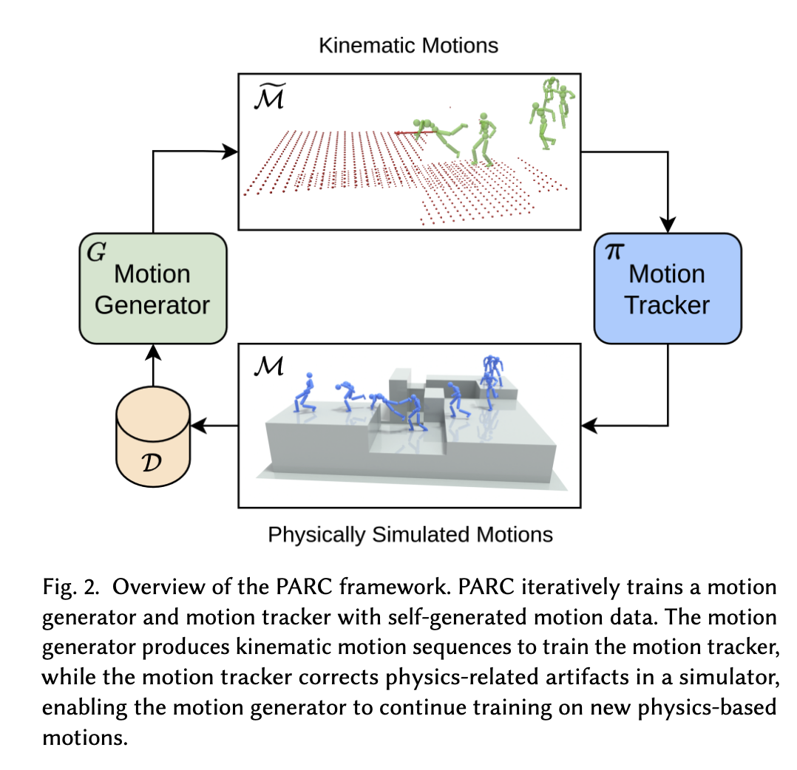

PARC: Physics-based Augmentation with Reinforcement Learning for Character Controllers
The goal of this paper is to enable characters to walk flexibly on complex terrain while mitigating issues like incorrect contacts or discontinuities.
Current methods usually rely heavily on motion capture data, which requires a large and diverse dataset to be effective. PARC addresses this by using a cyclic workflow:

The motion generator uses a diffusion model with a Transformer encoder architecture. It predicts a motion sequence , where each frame includes:
Conditions
The model is conditioned on several inputs to guide generation:
Training Data and Loss
The loss function consists of:
To prevent the model from overfitting to previous frames and ignoring the terrain, there is a 10% chance during training to use random terrain and disable the reconstruction loss.
Additionally, inspired by classifier-free guidance, the model interpolates between predictions with and without previous frame conditions during inference. This balances motion continuity with terrain compliance.
The tracking controller uses Reinforcement Learning (RL) to execute generated motions within a physics simulator, which naturally corrects the motion from a physical perspective.
Agent Configuration
Reward Design
The reward function encourages the agent to match the reference motion’s joint positions, velocities, poses, and root orientation.
Specifically, the agent is rewarded for matching the contact labels of the reference motion. This prevents the agent from using incorrect body parts as support points. While there is no explicit reward for balance, forcing the agent to match the reference poses encourages it to find physically stable ways to achieve those poses, effectively performing a correction of the original generated motion.
The policy is implemented as a 3-layer MLP and trained using Proximal Policy Optimization (PPO).
Human dynamics from monocular video with dynamic camera movements
Self-Correcting Self-Consuming Loops for Generative Model Training
Human Motion Diffusion Model
Deepmimic: Example-guided deep reinforcement learning of physics-based character skills